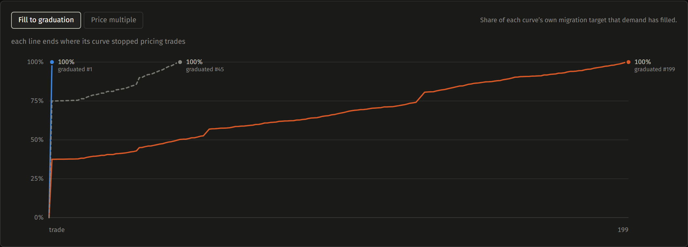

A launch curve.
Tested before launch.
Compare graduation targets against the same demand. Keep the experiment that explains the tradeoff.
Same orders.
Very different migration timing.
| Scenario | Target, SOL | Graduates at buy | DBC fee value, SOL |
|---|---|---|---|
| Graduate sooner | 5.48 | 1 | 0.01096 |
| Original config | 10.96 | 45 | 0.02192 |
| Graduate later | 21.92 | 199 | 0.04384 |
Buy orders stay fixed; sells are omitted. Alternatives use standard allocation defaults. Fee values combine partner and creator shares and are not SOL cash payouts.
See the path to graduation.

The stored swaps replay exactly.
Recorded swaps matched.
Integer checks cover output amount, next price, and quote reserve.
One fits the current designer. The other two remain available to offline verification.
The original launch migrates at swap 491. The buys-only baseline migrates at buy 45.
Reserve continuity and replay checks run before a fixture enters the corpus.
Keep the inputs.
Reproduce the result.
Start with a question
Explore graduation timing, curve length, or fee sensitivity with a complete saved comparison.
Change one assumption
Make an independent copy, change a control, and record the intended use and your reasoning.
Export the experiment
Import validated JSON in another browser. Mainnet examples need the same verified fixture.
Working today: browser storage, search, import, export, and source attribution. Files contain simulation inputs. A shared or paid marketplace is future work.
Try a verified launch.
Fork one assumption.
For launchpad builders evaluating the DBC phase of a new asset launch.
npm ci
npm run dev
npm run demo:evidence
Gather feedback on configuration choices and reproducibility. No external usage or revenue is claimed yet.
Broader histories and team libraries. Tokenized-equity applications remain an unvalidated use case.
Current scope excludes post-migration trading, dynamic fees, wallet execution, and trader-behavior prediction. The prototype and this deck are prepared locally for release review.